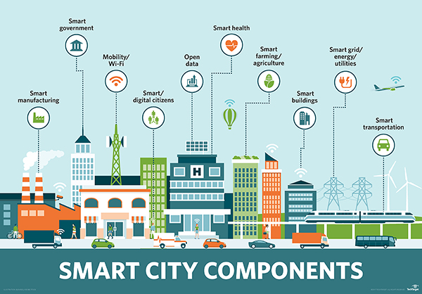

Introducción a las Smart Cities
Una ciudad inteligente es un área urbana que utiliza diferentes tipos de sensores electrónicos de recopilación de datos para suministrar información utilizada para administrar recursos de manera eficiente. Esto incluye datos recopilados de ciudadanos, dispositivos y activos que se procesan y analizan para monitorear y administrar el tráfico y los sistemas de transporte, centrales eléctricas, redes de suministro de agua, gestión de desechos, cumplimiento de la ley, sistemas de información, escuelas, bibliotecas, hospitales y otros servicios comunitarios.
Smart cities es tecnología de la información

Smart city: ejemplo Barcelona
Barcelona ha establecido una serie de proyectos que pueden considerarse aplicaciones de 'ciudad inteligente' dentro de su estrategia "CityOS". Por ejemplo, se ha implementado tecnología de sensores en el sistema de riego del Parc del Centre de Poblenou, donde se transmiten datos en tiempo real a los equipos de jardinería sobre el nivel de agua necesario para las plantas. Barcelona también ha diseñado una nueva red de autobuses basada en el análisis de datos de los flujos de tráfico más comunes en Barcelona, utilizando principalmente rutas verticales, horizontales y diagonales con una serie de intercambios. La integración de múltiples tecnologías de ciudades inteligentes se puede ver a través de la implementación de semáforos inteligentes, ya que los autobuses recorren rutas diseñadas para optimizar el número de semáforos en verde. Además, cuando se notifica una emergencia en Barcelona, la ruta aproximada del vehículo de emergencia se ingresa en el sistema de semáforos, poniendo todas las luces en verde a medida que el vehículo se acerca a través de una combinación de GPS y software de gestión de tráfico, lo que permite que los servicios de emergencia llegar al incidente sin demora. Gran parte de estos datos son administrados por la Plataforma Sentilo.
https://en.wikipedia.org/wiki/List_of_smart_cities#Barcelona
Smart cities también es comportamiento humano
En las Smart Cities no es sólo el componente tecnológico, también es muy importante el componente humano. Una ciudad podrá ser calificado de inteligente en la medida que las inversiones que se realicen en capital humano (educación), en aspectos sociales, en infraestructuras de energía, tecnologías de comunicación e infraestructuras de transporte, contemplen y promuevan una calidad de vida elevada, un desarrollo económico-ambiental durable y sostenible, una gobernanza participativa, una gestión prudente y reflexiva de los recursos naturales, así como un buen aprovechamiento del tiempo de los ciudadanos.
Tecnológicamente una Smart City se base en un conjunto de servicios (web) especializados
Si estos servicios contienen una componente geográfica (coordenadas), hablaremos de GeoServicios.
¿Qué es un servicio y para qué sirve?
Un servicio es una interfaz que recibe parámetros + valores y devuelve una respuesta formateada.
Los parámetros y repuestas son conocidos y están documentados en formato de API.
API - Application Programming Interface
La interfaz de programación de aplicaciones, conocida también por la sigla API, es un conjunto de subrutinas, funciones y procedimientos que ofrece cierta biblioteca para ser utilizada por otro software. 1
El término API se usa a menudo para referirse a las API web, que permiten la comunicación entre computadoras que están unidas por Internet. También hay API para lenguajes de programación, bibliotecas de software, sistemas operativos de computadora y hardware de computadora.
La documentación de la API generalmente se proporciona para facilitar el uso.
Webs con enlaces a diferentes APIs
HTTP
El protocolo HTTP tiene diferentes métodos de interrogación.
- GET
- POST
- UPDATE
- DELETE
- INSERT
Note
HTTP - GET es el más usado en APIs web
Tipos de peticiones HTTP - GET
KvP: (Key value Pair): después del ? pasamos parámetro = valor y concatenamos con &.
Ejemplo: http://midominio.com/servidor/enpoint?parametro1=valor1¶metro2=valor=2
RESTful: la URL define el recurso, dentro de una arquitectura REST.
Ejemplo: http://midominio.com/servidor/recurso.json
RESTful and KvP: la URL define el recurso, pero podemos filtrar recurso con parámetros.
Ejemplo: http://midominio.com/servidor/recurso.json?parametro1=valor1 (Utilizada en APIs OpenData)
Muchos servicios y/o información relativa a Smart City, son expuestos cómo OpenData (Datos Abiertos) en portales de administraciones públicas. Son las llamadas “Plataformas“ para la publicación y gestión de Open data.
Temario
- Introducción a las Smart Cities
- Conceptos Smart Cities
- Conceptos Open Data
- Conceptos sensores
- Tecnologías OpenData